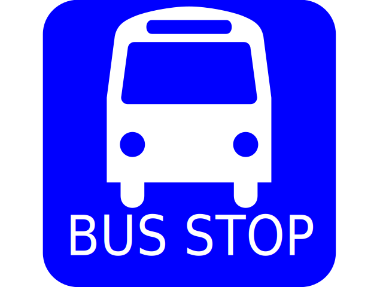

<mat-toolbar style="height:50px" color="primary">
  <div class="subTolbar">
    <mat-form-field style="width: 100px;
    font-size: 14px;">
      <mat-select placeholder="Kierunek">
        <mat-option (click)="changeDirection()" *ngFor="let dir of directions" [value]="dir.value">
          {{dir.viewValue}}
        </mat-option>
      </mat-select>
    </mat-form-field>
    <button (click)="changeTravelMode('WALKING')" [ngClass]="{'activeDirection': travelMode =='WALKING'}" mat-button><i
        class="material-icons">
        directions_walk
      </i></button>
    <button (click)="changeTravelMode('BICYCLING')" [ngClass]="{'activeDirection': travelMode =='BICYCLING'}"
      mat-button><i class="material-icons">
        directions_bike
      </i></button>
    <button (click)="changeTravelMode('DRIVING')" [ngClass]="{'activeDirection': travelMode =='DRIVING'}" mat-button><i
        class="material-icons">
        directions_car
      </i></button>
  </div>
</mat-toolbar>
<mat-card style="padding: 0px;margin:3px">
  <div id="mapStart" style="height:300px" class="row content flex-map"></div>
  <mat-grid-list *ngIf="searchEnd" cols="2" rowHeight="3:1">

    <mat-grid-tile style="flex-direction:column">
      {{nearStop.city}}
      <p style="margin:2px;font-size: 12px;color: grey">Najbliższy przystanek</p>
    </mat-grid-tile>
    <mat-grid-tile style="flex-direction:column">
      {{nearStop.data.duration.text}}
      <p style="margin:2px;font-size: 12px;color: grey">Czas dojścia</p>
    </mat-grid-tile>
  </mat-grid-list>
  <mat-grid-list *ngIf="!searchEnd" cols="1" rowHeight="3:1">

    <mat-grid-tile style="flex-direction:column">
      Znajdź odjazdy z najbliższego przystanku
      <p style="margin:2px;font-size: 12px;color: grey">określ kierunek i sposób dotarcia</p>
    </mat-grid-tile>
  </mat-grid-list>

</mat-card>
<div *ngIf="progressWidth > 0 && progressWidth < 100">
  <mat-progress-bar color="warn" mode="determinate" value="{{progressWidth}}"></mat-progress-bar>
</div>
<div *ngIf="searchEnd">
  <h3 style="text-align: center;font-family: Roboto, 'Helvetica Neue', sans-serif;">Odjazdy z <span style="color:#e57373">{{nearStop.city}}
    </span></h3>
  <div *ngFor="let course of displayCourses">
    <mat-card (click)="showDetails(course)" style="padding: 5px;margin:3px">
      <mat-grid-list cols="3" rowHeight="3:1">

        <mat-grid-tile style="flex-direction:column-reverse">
          {{course.direction}}
          <p style="margin:2px;font-size: 12px;color: grey">Kierunek</p>
        </mat-grid-tile>
        <mat-grid-tile style="flex-direction:column">
          {{course.firstStop.timeString}}
          <p style="margin:2px;font-size: 12px;color: grey">Odjazd</p>
        </mat-grid-tile>
        <mat-grid-tile style="flex-direction:column;color:#e57373">
          {{calculateTimeString(course.firstStop)}}
          <p style="margin:2px;font-size: 12px;color: grey">Za</p>
        </mat-grid-tile>
      </mat-grid-list>
    </mat-card>
  </div>
</div>

<!-- <div class="search-course button-center">

  
 
</div> 
<div *ngIf="watchCourse">
  <watched-course (endWatch)="onWatchEnd()"></watched-course>
</div>
<div *ngIf="!watchCourse">
  <button *ngIf="searchEnd && checkPrev()" (click)="getPrevCourse()" color="primary" style="position:fixed;left:2px;top:140px"
    mat-mini-fab><mat-icon>chevron_left</mat-icon></button>
  <button *ngIf="searchEnd && checkNext()" (click)="getNextCourse()" color="primary" style="position:fixed;right:2px;top:140px"
    mat-mini-fab><mat-icon>chevron_right</mat-icon></button>
  <div class="box">
    <div class="row header">
      <div class="direction-menu">
        <button [disabled]="progressWidth > 0 && progressWidth < 100" (click)="changeDirection()">
          
          
        </button>
        <button [disabled]="progressWidth > 0 && progressWidth < 100" [ngClass]="{'active' : travelMode == 'WALKING'}" (click)="changeTravelMode('WALKING')"></button>
        <button [disabled]="progressWidth > 0 && progressWidth < 100" [ngClass]="{'active' : travelMode == 'BICYCLING'}" (click)="changeTravelMode('BICYCLING')"></button>
        <button [disabled]="progressWidth > 0 && progressWidth < 100" [ngClass]="{'active' : travelMode == 'DRIVING'}" (click)="changeTravelMode('DRIVING')"></button>
      </div>
      <div style="padding-top:10px;text-align: center;font-size: 14px; background-color: #5255e0; height: 110px;">
        <div *ngIf="!searchEnd">Wybierz kierunek
          <div style="color:white">(LIM - do Limanowej, KRK - w strone Krakowa)</div>
          <div>oraz sposób dotarcia na przystanek</div>
          <div>Wymagana jest lokalizacja oraz połączenie z internetem</div>
        </div>
        <div *ngIf="searchEnd">
          <div>Czas dojścia na przystanek: <span style="color:white">{{nearStop.data.duration.text}}</span></div>
          <div style="height:35px">Bus będzie o <span style="color:white" class='time'>{{nearCourse.firstStop.timeString}}</span></div>
          <div>na przystanku <span style="color:white" class='place'>{{nearStop.city}}</span></div>
          <div><span style="color:white;font-size: 13px">{{resolveDirection()}}</span></div>
        </div>
      </div>
    </div>
    <div id="mapStart" class="row content flex-map">
    </div>
  </div>
  <div *ngIf="this.nearCourse" (click)="showOptions()" style="width:35px;position:fixed;bottom:0px;left:47%;border-top-left-radius: 10px;border-top-right-radius: 10px;text-align: center;background-color: #5255e0"> <i class="material-icons">
    more_horiz</i> </div>
</div>
-->